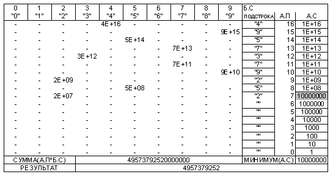
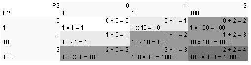
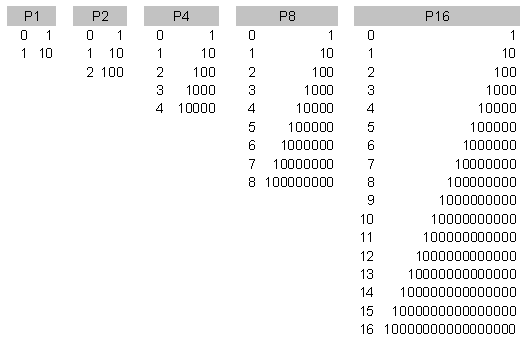
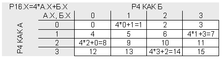
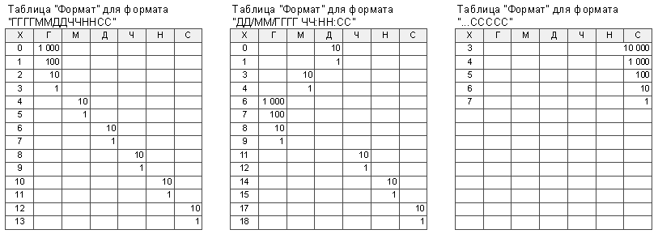
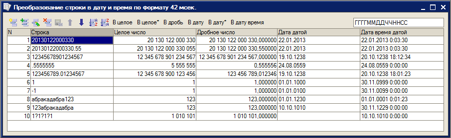
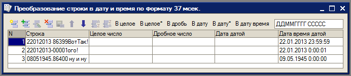
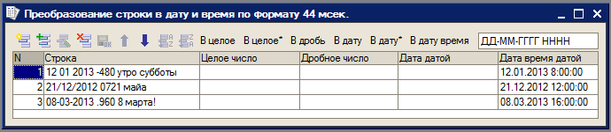

Выразить строку как число и строку как дату в запросе
1. Преобразование таблицы строк в таблицу целых чисел.
Преобразование таблицы строк в таблицу целых чисел позволяет выполнить следующий пакетный запрос. При построении запроса считается, что максимальная длина числа ограничена 17 знаками.
"ВЫБРАТЬ Дано.НомерСтроки, Дано.Строка
|ПОМЕСТИТЬ Дано
|ИЗ &Дано КАК Дано
|;
|ВЫБРАТЬ 0 С, 1 КАК П
|ПОМЕСТИТЬ Р16
|ОБЪЕДИНИТЬ ВЫБРАТЬ 1, 10
|ОБЪЕДИНИТЬ ВЫБРАТЬ 2, 100
|ОБЪЕДИНИТЬ ВЫБРАТЬ 3, 1000
|ОБЪЕДИНИТЬ ВЫБРАТЬ 4, 10000
|ОБЪЕДИНИТЬ ВЫБРАТЬ 5, 100000
|ОБЪЕДИНИТЬ ВЫБРАТЬ 6, 1000000
|ОБЪЕДИНИТЬ ВЫБРАТЬ 7, 10000000
|ОБЪЕДИНИТЬ ВЫБРАТЬ 8, 100000000
|ОБЪЕДИНИТЬ ВЫБРАТЬ 9, 1000000000
|ОБЪЕДИНИТЬ ВЫБРАТЬ 10, 10000000000
|ОБЪЕДИНИТЬ ВЫБРАТЬ 11, 100000000000
|ОБЪЕДИНИТЬ ВЫБРАТЬ 12, 1000000000000
|ОБЪЕДИНИТЬ ВЫБРАТЬ 13, 10000000000000
|ОБЪЕДИНИТЬ ВЫБРАТЬ 14, 100000000000000
|ОБЪЕДИНИТЬ ВЫБРАТЬ 15, 1000000000000000
|ОБЪЕДИНИТЬ ВЫБРАТЬ 16, 10000000000000000
|;
|ВЫБРАТЬ СУММА(А.П * Б.С) / МИНИМУМ(А.П) КАК Ответ
|ИЗ Дано, Р16 КАК А, Р16 КАК Б
|ГДЕ Б.С < 10 И ПОДСТРОКА(Дано.Строка, 17 - А.С, 1) = ПОДСТРОКА(""0123456789"", Б.С + 1, 1)
|СГРУППИРОВАТЬ ПО Дано.НомерСтроки"
В пакете всего три запроса.
Первый запрос пакета выполняет загрузку таблицы значений, содержащей исходные строковые представления чисел, и помещает ее в таблицу «Дано» с колонками «НомерСтроки» и "Строка". Второй запрос пакета формирует искусственную таблицу, содержащую номера позиций и их вес в десятичной позиционной системе счисления. Счет позиций идет справа налево.
Вся основная работа по преобразованию строки в число выполняется в последнем, третьем запросе пакета. В этом запросе таблица «Дано» умножается на таблицу весов позиций Р16 (КАК А) и еще раз на таблицу Р16 (КАК Б). В последней используется только первые десять строк первой колонки для прохода по номерам всех цифр строки «0123456789». Условие «ГДЕ» отбирает записи, в которых цифры в исходной строке и строке «0123456789» совпадают в позиции, определяемой для исходной строки строкой таблицы весов А и для строки цифр – строкой таблицы номеров цифр Б. Это дает возможность определить искомое число как сумму произведений веса позиции на номер цифры. При этом группировка идет по строкам таблицы «Дано».
Получающаяся сумма требует нормализации путем деления на минимальный вес позиции, имеющейся в числе. Это делается вместо отсчета позиций от реального правого края строки, который неизвестен в соответствующий момент.
Работа данного запроса иллюстрируется схемой на фиг.1, где показано преобразование в число строки «4957379257».

Нужно отметить, что данный алгоритм отличается высокой устойчивостью к ошибкам в исходных данных. Например, строка «123абракадабра», строка «абракадабра123», строка «так тоже123можно» одинаково хорошо преобразуются в число 123. Символы, не являющиеся цифрами, заменяются нулями или просто отбрасываются (если они справа от последней цифры) как не распознанные.
Преобразования в числа при задании различных исходных строк приведены на скриншотах, прилагаемых к статье.
2. Преобразование таблицы строк в таблицу дробных чисел.
Преобразование таблицы строк в таблицу дробных чисел можно выполнить следующим пакетным запросом.
"ВЫБРАТЬ Дано.НомерСтроки, Дано.Строка
|ПОМЕСТИТЬ Дано
|ИЗ &Дано КАК Дано
|;
|ВЫБРАТЬ 0 С, 1 КАК П
|ПОМЕСТИТЬ Р16
|ОБЪЕДИНИТЬ ВЫБРАТЬ 1, 10
|ОБЪЕДИНИТЬ ВЫБРАТЬ 2, 100
|ОБЪЕДИНИТЬ ВЫБРАТЬ 3, 1000
|ОБЪЕДИНИТЬ ВЫБРАТЬ 4, 10000
|ОБЪЕДИНИТЬ ВЫБРАТЬ 5, 100000
|ОБЪЕДИНИТЬ ВЫБРАТЬ 6, 1000000
|ОБЪЕДИНИТЬ ВЫБРАТЬ 7, 10000000
|ОБЪЕДИНИТЬ ВЫБРАТЬ 8, 100000000
|ОБЪЕДИНИТЬ ВЫБРАТЬ 9, 1000000000
|ОБЪЕДИНИТЬ ВЫБРАТЬ 10, 10000000000
|ОБЪЕДИНИТЬ ВЫБРАТЬ 11, 100000000000
|ОБЪЕДИНИТЬ ВЫБРАТЬ 12, 1000000000000
|ОБЪЕДИНИТЬ ВЫБРАТЬ 13, 10000000000000
|ОБЪЕДИНИТЬ ВЫБРАТЬ 14, 100000000000000
|ОБЪЕДИНИТЬ ВЫБРАТЬ 15, 1000000000000000
|ОБЪЕДИНИТЬ ВЫБРАТЬ 16, 10000000000000000
|;
|ВЫБРАТЬ СУММА(А.П * Б.С * ВЫБОР КОГДА ПОДСТРОКА(Строка, 1, 17 - А.С) ПОДОБНО ""%.%"" ТОГДА 10 ИНАЧЕ 1 КОНЕЦ)
|/ МИНИМУМ(ВЫБОР КОГДА НЕ ПОДСТРОКА(Строка, 1, 17 - А.С) ПОДОБНО ""%.%"" ТОГДА А.П ИНАЧЕ 100000000000000000 КОНЕЦ) КАК Ответ
|ИЗ Дано КАК Дано, Р16 КАК А, Р16 КАК Б
|ГДЕ Б.С < 10 И ПОДСТРОКА(Строка, 17 - А.С, 1) = ПОДСТРОКА(""0123456789"", Б.С + 1, 1)
|СГРУППИРОВАТЬ ПО Дано.НомерСтроки"
Данный пакетный запрос отличается от предыдущего особой обработкой позиций, находящихся справа от первой десятичной точки. Такие позиции выделяются с использованием оператора ПОДОБНО. Проверяется подобие подстроки, заканчивающейся в данной позиции и шаблона "%.%". Для позиций, находящихся правее точки, применяется дополнительный множитель 10. Также меняется определение нормализующего делителя, который находится как минимум веса позиций, не находящихся правее первой точки.
3. Преобразование таблицы строк в таблицу целых чисел с "выращиванием" таблицы весов.
В данном варианте первого запроса вместо громоздкого текста, который непосредственно определяет строки таблицы весов, используется прием выращивания (порождения) этой таблицы.
"ВЫБРАТЬ Дано.НомерСтроки, Дано.Строка
|ПОМЕСТИТЬ Дано
|ИЗ &Дано КАК Дано
|;
|ВЫБРАТЬ 0 КАК С, 1 КАК П
|ПОМЕСТИТЬ Р1
|ОБЪЕДИНИТЬ ВЫБРАТЬ 1, 10
|;
|ВЫБРАТЬ А.С + Б.С КАК С, МАКСИМУМ(А.П * Б.П) КАК П
|ПОМЕСТИТЬ Р2
|ИЗ Р1 КАК А, Р1 КАК Б
|СГРУППИРОВАТЬ ПО А.С + Б.С
|;
|ВЫБРАТЬ А.С + Б.С КАК С, МАКСИМУМ(А.П * Б.П) КАК П
|ПОМЕСТИТЬ Р4
|ИЗ Р2 КАК А, Р2 КАК Б
|СГРУППИРОВАТЬ ПО А.С + Б.С
|;
|ВЫБРАТЬ А.С + Б.С КАК С, МАКСИМУМ(А.П * Б.П) КАК П
|ПОМЕСТИТЬ Р8
|ИЗ Р4 КАК А, Р4 КАК Б
|СГРУППИРОВАТЬ ПО А.С + Б.С
|;
|ВЫБРАТЬ А.С + Б.С КАК С, МАКСИМУМ(А.П * Б.П) КАК П
|ПОМЕСТИТЬ Р16
|ИЗ Р8 КАК А, Р8 КАК Б
|СГРУППИРОВАТЬ ПО А.С + Б.С
|;
|ВЫБРАТЬ СУММА(А.П * Б.С) / МИНИМУМ(А.П) КАК Ответ
|ИЗ Дано, Р16 КАК А, Р16 КАК Б
|ГДЕ Б.С < 10 И ПОДСТРОКА(Дано.Строка, 17 - А.С, 1) = ПОДСТРОКА(""0123456789"", Б.С + 1, 1)
|СГРУППИРОВАТЬ ПО Дано.НомерСтроки"
В этом пакетном запросе семь подзапросов.
Первый запрос, как всегда, осуществляет ввод данных.
Во втором запросе пакета определяется таблица Р1 для позиций 0 и 1 с весом 1 и 10. Затем в третьем запросе перемножением Р1 на себя получается таблица Р2, содержащая позиции 0, 1 и 2 с весом 1, 10 и 100. В четвертом запросе перемножением Р2 на себя получается таблица Р4. Схема этого умножения показана на фиг.2. В пятом запросе пакета Р4 умножается на себя и получается Р8, в шестом Р8 умножается на себя и получается Р16. При перемножении используется группировка по сумме номера позиции с агрегацией в виде максимума произведения весов позиций. Поскольку число позиций каждый раз увеличивается вдвое, для выращивания итоговой таблицы из 17 строк понадобилось всего четыре запроса. Похожая «математика» используется в статье "Транзитивное замыкание запросом" [http://infostart.ru/public/158512/]. Все получаемые таблицы изображены на фиг.3.


4. Преобразование таблицы строк в таблицу дат.
Преобразование таблицы строк вида «ГГГГММДД» в таблицу дат можно выполнить следующим пакетным запросом.
"ВЫБРАТЬ Дано.НомерСтроки, Дано.Строка
|ПОМЕСТИТЬ Дано
|ИЗ &Дано КАК Дано
|;
|ВЫБРАТЬ 0 Х, 0 Д, 0 М, 1000 Г
|ПОМЕСТИТЬ Формат
|ОБЪЕДИНИТЬ ВЫБРАТЬ 1, 0, 0, 100
|ОБЪЕДИНИТЬ ВЫБРАТЬ 2, 0, 0, 10
|ОБЪЕДИНИТЬ ВЫБРАТЬ 3, 0, 0, 1
|ОБЪЕДИНИТЬ ВЫБРАТЬ 4, 0, 10, 0
|ОБЪЕДИНИТЬ ВЫБРАТЬ 5, 0, 1, 0
|ОБЪЕДИНИТЬ ВЫБРАТЬ 6, 10, 0, 0
|ОБЪЕДИНИТЬ ВЫБРАТЬ 7, 1, 0, 0
|ОБЪЕДИНИТЬ ВЫБРАТЬ 8, 0, 0, 0
|ОБЪЕДИНИТЬ ВЫБРАТЬ 9, 0, 0, 0
|;
|ВЫБРАТЬ ДОБАВИТЬКДАТЕ(ДОБАВИТЬКДАТЕ(ДОБАВИТЬКДАТЕ(ДАТАВРЕМЯ(1,1,1,0,0,0),ДЕНЬ,СУММА(А.Д*Б.Х)-1),МЕСЯЦ,СУММА(А.М*Б.Х)-1),ГОД,СУММА(А.Г*Б.Х)-1) КАК Ответ
|ИЗ Дано, Формат КАК А, Формат КАК Б
|ГДЕ А.Х < 8 И Б.Х < 10 И ПОДСТРОКА(Дано.Строка, А.Х + 1, 1) = ПОДСТРОКА(""0123456789"", Б.Х + 1, 1)
|СГРУППИРОВАТЬ ПО Дано.НомерСтроки"
В данном запросе всего три подзапроса, причем первый из них выполняет функцию ввода таблицы строк в запрос.
Во втором запросе определяется временная таблица "Формат" с четырьмя колонками. В колонке "Х" записывается номер позиции в строке, начиная с нуля слева направо, в колонке "Д" - вес позиции при подсчете числа дней, "М" - месяцев, "Г" - лет. В последнем запросе вычисляется сумма произведений каждой колонки на номер цифры, находящейся в соответствующей позиции. Далее эти суммы произведений как число лет, месяцев и дней добавляются функцией добавить к дате сначала к "нулевому дню" '00010101', потом к результату первого добавления, а затем к результату второго. Это и дает в итоге искомую дату.
Очевидно, что переопределением таблицы "Формат" можно легко настроить запрос на нужный формат читаемых дат. Кроме того, нетрудно учесть наличие в строке значений часов, минут и секунд для ввода даты со временем.
5. Преобразование таблицы строк в таблицу дат с "выращиванием" таблицы позиций.
Текст данного запроса выглядит следующим образом.
"ВЫБРАТЬ Дано.НомерСтроки, Дано.Строка
|ПОМЕСТИТЬ Дано
|ИЗ &Дано КАК Дано
|;
|ВЫБРАТЬ 0 КАК Х
|ПОМЕСТИТЬ Р1
|ОБЪЕДИНИТЬ ВЫБРАТЬ 1
|;
|ВЫБРАТЬ А.Х + 2 * Б.Х КАК Х
|ПОМЕСТИТЬ Р2
|ИЗ Р1 КАК А, Р1 КАК Б
|;
|ВЫБРАТЬ А.Х + 4 * Б.Х КАК Х
|ПОМЕСТИТЬ Р4
|ИЗ Р2 КАК А, Р2 КАК Б
|;
|ВЫБРАТЬ ДОБАВИТЬКДАТЕ(
| ДОБАВИТЬКДАТЕ(
| ДОБАВИТЬКДАТЕ(
| ДАТАВРЕМЯ(1, 1, 1, 0, 0, 0)
| , ДЕНЬ
| , СУММА(ВЫБОР А.Х КОГДА 7 ТОГДА 1 КОГДА 6 ТОГДА 10 КОНЕЦ * Б.Х) - 1
| )
| , МЕСЯЦ
| , СУММА(ВЫБОР А.Х КОГДА 5 ТОГДА 1 КОГДА 4 ТОГДА 10 КОНЕЦ * Б.Х) - 1
| )
| , ГОД
| , СУММА(ВЫБОР А.Х КОГДА 3 ТОГДА 1 КОГДА 2 ТОГДА 10 КОГДА 1 ТОГДА 100 КОГДА 0 ТОГДА 1000 КОНЕЦ * Б.Х) - 1
| ) КАК Ответ
|ИЗ Дано, Р4 КАК А, Р4 КАК Б
|ГДЕ А.Х < 8 И Б.Х < 10 И ПОДСТРОКА(Дано.Строка, А.Х + 1, 1) = ПОДСТРОКА(""0123456789"", Б.Х + 1, 1)
|СГРУППИРОВАТЬ ПО Дано.НомерСтроки"
В отличие от предыдущих запросов, здесь не используется определение веса позиций заранее. Веса позиций определяются в ходе суммирования. Поэтому заранее достаточно вырастить таблицу позиций цифр Р16. Это делается также как в статье "Порождающий запрос" [http://infostart.ru/public/90367/] из таблицы Р2, содержащей 0 и 1, задаваемой вторым запросом пакета. Сначала Р2 умножается на себя и без группировок получается Р4 из четырех строк 0, 1, 2 и 3 (третий запрос), затем Р4 умножается на себя и получается Р16 из 16-ти строк 0, 1, 2, 3, 4, 5, 6, 7, 8, 9, 10, 11, 12, 13, 14 и 15 (четвертый запрос пакета). Умножение матрицы Р4 на себя в четвертом запросе показано в виде схемы фиг.4.

Вся основная работа выполняется в пятом запросе. Год в виде числа, месяц в виде числа и день в виде числа получаются как сумма произведений номера цифры на вес позиции. Вес позиций определяется для каждого элемента даты отдельно при помощи оператора «ВЫБОР». Определенные год, месяц и день подставляются в функции «ДОБАВИТЬКДАТЕ», что и дает в итоге искомую дату.
6. Преобразование таблицы строк в таблицу дат со временем по формату, задаваемом параметром запроса.
При анализе запроса 4 можно увидеть, что формат даты задается таблицей весов позиций года, месяца и дня «Формат». Эту таблицу можно дополнить колонками для часов, минут и секунд. При различном заполнении этой таблицы можно анализировать даты, представленные в самом различном формате. Примеры заполнения таблицы "Формат" для различных форматов даты приведены на фиг.5.

В связи с эти возникает идея: А если вообще не задавать таблицу "Формат" заранее, а построить ее внутри запроса путем анализа текстового параметра "&Формат", передаваемого в запрос и определяющего формат даты. Тогда запрос станет чрезвычайно гибким и универсальным. На этой идее построен шестой запрос.
Текст данного запроса, отличающейся универсальностью за счет управления преобразованием с помощью строкового параметра "&Формат", можно посмотреть в прилагаемой к статье обработке. Дополнительным бонусом, скачавшим обработку, будут примеры очень уместного использования (как кажется) функции "НовыйЗапрос" [http://infostart.ru/public/163853/] в модуле обработки. На скриншотах, прилагаемых к статье, приведены примеры преобразований при задании различных форматов даты. В определении формата использованы русские букы "Г", "М", "Д", "Ч", "Н" и "С". Важно, что позиции минут обозначены не маленькой русской "м", а русской "н", поскольку в запросе нет возможности различить регистр символов. Для заполнения незначащих позиций можно использовать любые другие символы. Примеры задания формата: "ГГГГММДДЧЧННСС", "ДД_ММ_ГГГГ_ЧЧ:НН:СС", "ССССС - тоже работает".
Заключение.
В заключение хочется отметить, что хотя язык запросов платформы 1С:Предприятие имеет весьма слабые возможности работы со строками, использование техники искусственых таблиц отчасти компенсирует этот недостаток. С другой стороны, та же причина открывает широкий простор нашей изобретательности при написании запросов. Пользуйтесь этим!
Скриншоты

Результаты преобразования в окне тестовой обработки

Результаты преобразования в окне тестовой обработки

Результаты преобразования в окне тестовой обработки